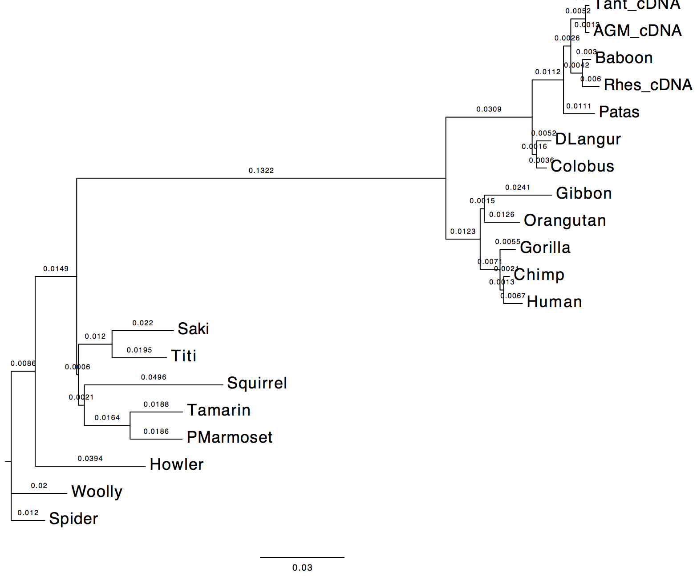
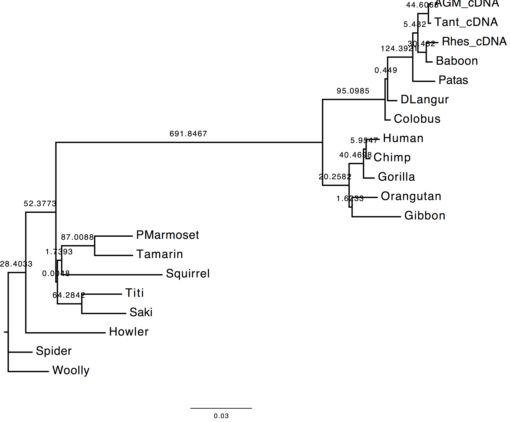
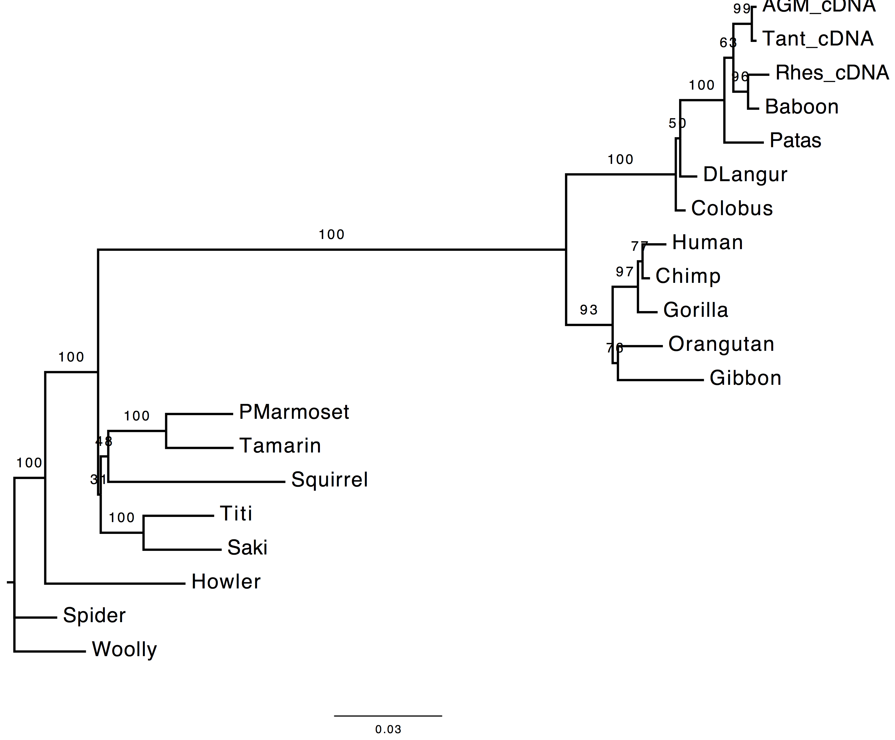
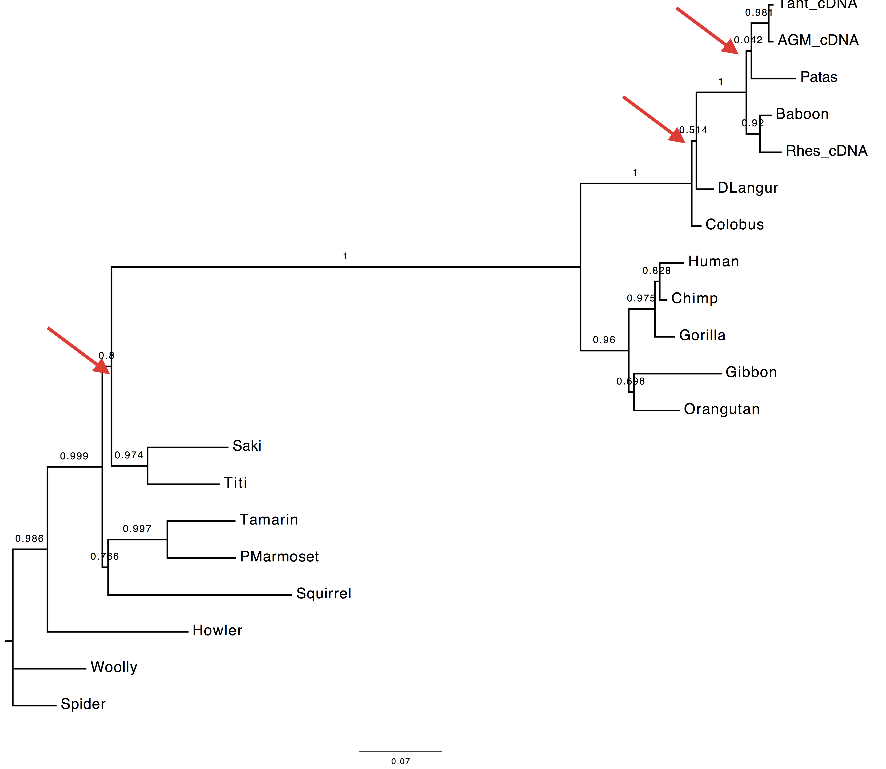
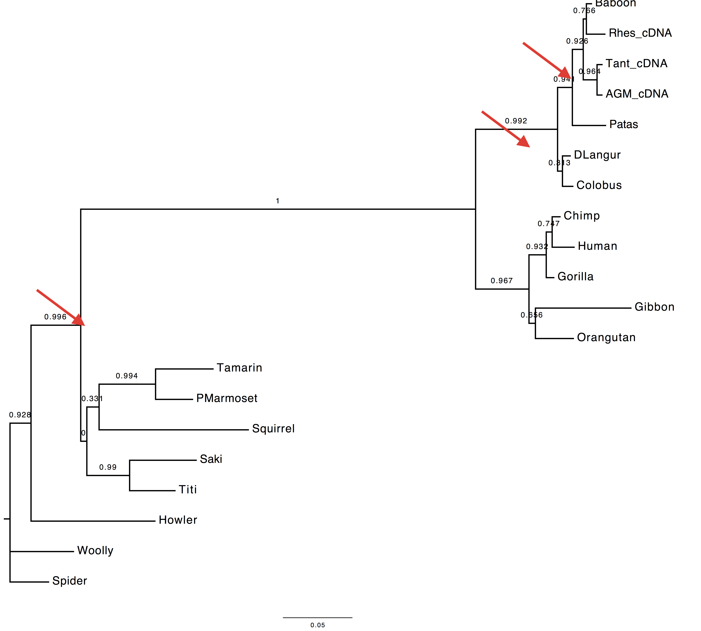
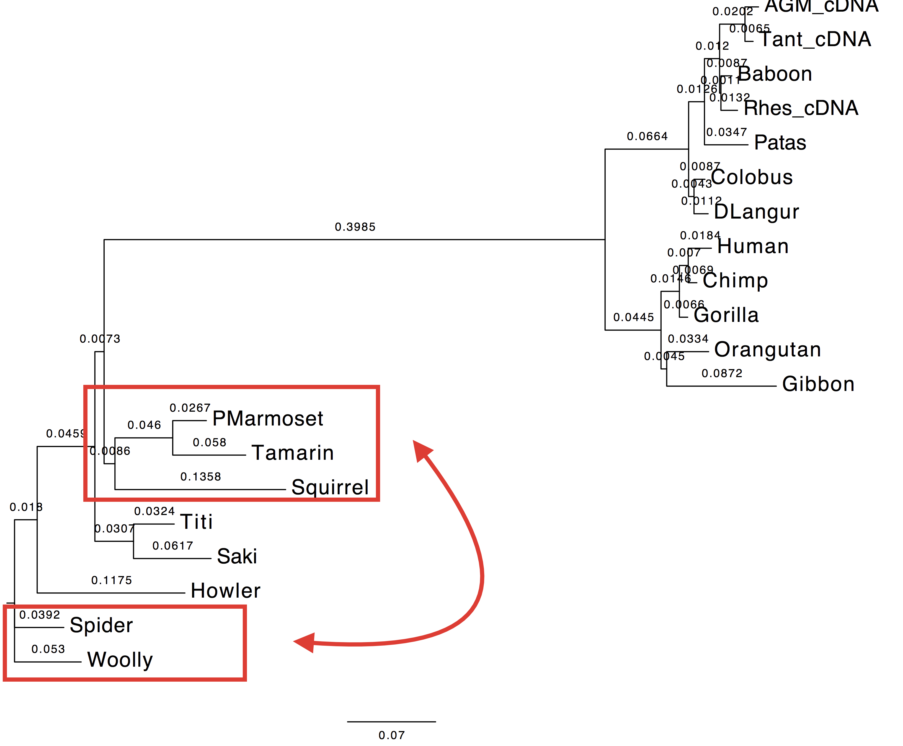
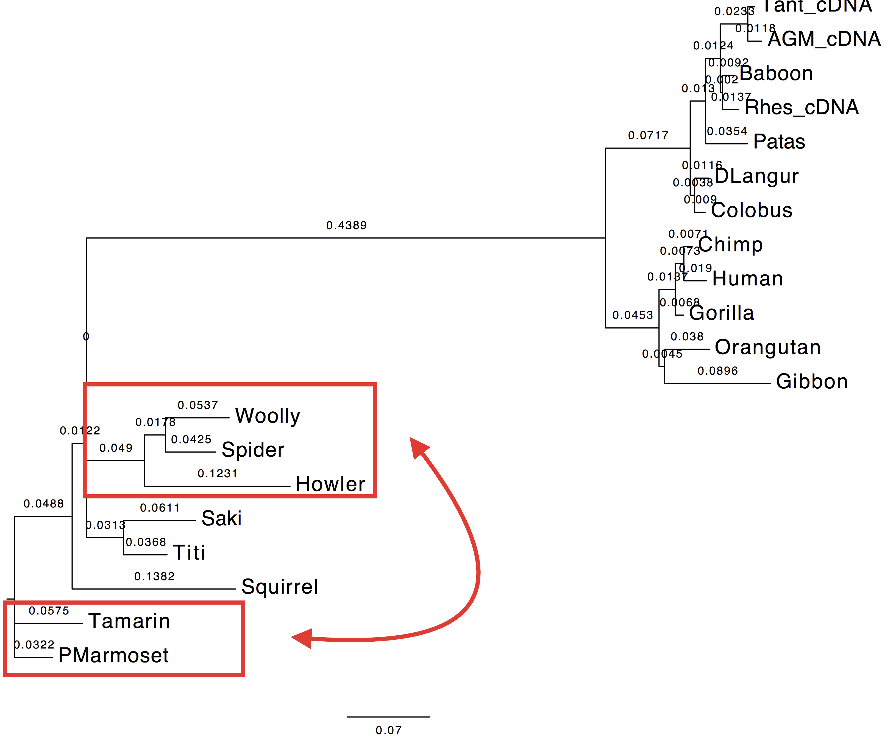

Tutorial 1: Inferring phylogenies using maximum likelihood
In this tutorial you will be guided in using PhyML and its extension, CodonPhyML, to solve common phylogenetic problems. For some of the following exercises there might be more than one single solution.
These exercises were prepared by Maria Anisimova
ML with DNA data (the primate DNA dataset)
Dataset file: primates-nt.phy
Exercise 1
GOAL: In this exercise you are asked to run PhyML twice in order to compare the effect of estimating nucleotide frequencies from the used dataset vs. optimising them with a maximum likelihood (ML) approach.
Execution
1. First run
- Nucleotide substitution model = HKY85 + Gamma
- Estimating transition/transversion ratio ( parameter of HKY85 model)
- Estimating alpha parameter (remember for gamma distributions used in phylogenetics)
- Estimating nucleotide frequencies with ML
Here is the list of the parameters to change:
From 2nd menu
[M] ................. Model of nucleotide substitution HKY85
[F] ................. Optimise equilibrium frequencies yes
[T] .................... Ts/tv ratio (fixed/estimated) estimated
[C] ........... Number of substitution rate categories 4
[G] ............. Gamma distributed rates across sites yes
[A] ... Gamma distribution parameter (fixed/estimated) estimated
2. Second run
- Nucleotide substitution model = HKY85 + Gamma
- Estimating transition/transversion ratio ( parameter of HKY85 model)
- Estimating alpha parameter (remember for gamma distributions used in phylogenetics)
- Estimating nucleotide frequencies empirically from the data
Here is the list of the parameters to change:
From 2nd menu
[M] ................. Model of nucleotide substitution HKY85
[F] ................. Optimise equilibrium frequencies no
[T] .................... Ts/tv ratio (fixed/estimated) estimated
[C] ........... Number of substitution rate categories 4
[G] ............. Gamma distributed rates across sites yes
[A] ... Gamma distribution parameter (fixed/estimated) estimated
Questions
1. Do you see much difference in the tree?
The topology does not change, however we can observe a change in the computed branch lengths.
| Nt-frequencies optimised | Nt-frequencies estimated |
|---|---|
 |
 |
2. In the likelihood value (stat file)?
The likelihood value of the tree inferred using the nucleotide frequencies estimated empirically from the dataset is lower than the likelihood value of the tree inferred using the nucleotide frequencies estimated via ML. This is due to dataset dimensions (the number of the sequences used).
run 1: -6172.58045
run 2: -6173.49655
3. Which option is best and why do you think so?
The best option in this case is to use the ML approach since the ML optimisation technique provides better estimates for the nucleotide frequencies, which, in turn, affect the likelihood of the inferred tree. This is due to the nucleotide frequencies which are used in the calculation of the likelihood of each site of the alignment (, where is the vector of the nucleotide frequencies and the rate matrix).
Exercise 2
GOAL: In this exercise you are asked to optimise the tree topology on the substitution parameters obtained using ML performing a tree search (i.e. NNI, SPR, TBR) on the initial tree topology.
Execution
1. Run
- Nucleotide substitution model = HKY85 + Gamma
- Estimating transition/transversion ratio ( parameter of HKY85 model)
- Estimating alpha parameter (remember for gamma distributions used in phylogenetics)
- Estimating nucleotide frequencies with ML
- No tree search (tree optimisation)
Here is the list of the parameters to change from the PhyML menu:
From 2nd menu
[M] ................. Model of nucleotide substitution HKY85
[F] ................. Optimise equilibrium frequencies yes
[T] .................... Ts/tv ratio (fixed/estimated) estimated
[C] ........... Number of substitution rate categories 4
[G] ............. Gamma distributed rates across sites yes
[A] ... Gamma distribution parameter (fixed/estimated) estimated
From 3rd menu
[O] ........................... Optimise tree topoLOGy no
Questions
1. Compare the trees obtained with and without tree-search. What do you observe and why?
The topology inferred without tree search presents a variation in the internal node attribution for the clades (DLangur, Colobus) and (Saki, Titi).
| With tree-search | Without tree-search |
|---|---|
|
 |
* 2. Compare the model estimates with and without tree-search. What do you observe and why?*
The transition/transversion ratio differs slightly between the two runs. As the matter of fact, parameter appears to have a higher value when tree-search is not performed.
3. Compare the likelihood of the ML and NJ trees. What do you observe and why?
The likelihood value obtained without tree-search is lower than the value obtain performing the topology optimisation. This value is expected since the substitution parameters are optimised over the first inferred tree topology which did not undergo any refinement.
with tree-search: -6172.58045
without tree-search: -6173.00555
Exercise 3
GOAL: In this exercise you are asked to compare different substitution models (and their variations) on the same dataset.
Execution
| Model | Log-likelihood | Parameters | AIC |
|---|---|---|---|
| JC | -6379.66383 | 38 | 12835.32766 |
| JC_I | -6311.41650 | 39 | 12700.833 |
| JC_G | -6304.38084 | 39 | 12686.76168 |
| JC_G_I | -6304.35263 | 40 | 12688.70526 |
| HKY | -6251.43051 | 42 | 12586.86102 |
| HKY_I | -6180.09689 | 43 | 12446.19378 |
| HKY_G | -6172.58045 | 43 | 12431.1609 |
| HKY_G_I | -6172.52896 | 44 | 12433.05792 |
| GTR | -6241.48788 | 46 | 12574.97576 |
| GTR_I | -6171.17472 | 47 | 12436.34944 |
| GTR_G | -6163.87291 | 47 | 12421.74582 |
| GTR_G_I | -6172.52896 | 48 | 12441.05792 |
The number of parameters are computed in the following way for a rooted tree:
substitution models: JC = 0 parameters | HKY = 4 parameters | GTR = 8 parameters
invariant sites = +1 parameter
gamma rates = +1 parameter
We compute the AIC value as follows:
Questions
1. Which model is the best (including HKY+Gamma), based on the AIC criterion?
We select the model with the lowest AIC value. In this case, GTR + Gamma
This exercise can also be solved using jmodeltest which performs automatically phylogenetic tree reconstructions with every model and extra parameters (i.e. invariant sites, gamma).
Exercise 4
GOAL: In this exercise you are asked to compute the branch support using different statistical methods. We are going to evaluate it on the phylogenetic tree evaluated with the following settings:
. Tree topology search : NNIs
. Initial tree: BioNJ
. Model of nucleotides substitution: GTR
. Number of taxa: 20
. Log-likelihood: -6163.87291
. Unconstrained likelihood: -5060.29926
. Parsimony: 741
. Tree size: 0.54568
. Discrete gamma model: Yes
- Number of categories: 4
- Gamma shape parameter: 0.565
. Nucleotides frequencies:
- f(A)= 0.29130
- f(C)= 0.21021
- f(G)= 0.25260
- f(T)= 0.24589
. GTR relative rate parameters :
A <-> C 1.62195
A <-> G 4.11843
A <-> T 0.80648
C <-> G 1.47358
C <-> T 3.64931
G <-> T 1.00000
. Instantaneous rate matrix :
[A---------C---------G---------T------]
-1.00085 0.21604 0.65916 0.12565
0.29937 -1.10379 0.23585 0.56858
0.76015 0.19627 -1.11222 0.15580
0.14885 0.48607 0.16005 -0.79498
Execution
We are going to run PhyML twice: once using the non parametric bootstrap and the second time using the SH-aLRT method.
1. First run
[B] ................ Non parametric bootstrap analysis yes (100 replicates)
[A] ................ Approximate likelihood ratio test no
We perform a bootstrap analysis using 100 replicates (4th menu).
Bootstrap analysis assumes that:
- sites are independently and identically distributed (i.i.d.)
- Amplifies the biases of the tree inference method
- Often conservative (>70% is considered strong support, but no guarantee)
- Slow for large datasets
- Difficult to interpret
2. Second run
[B] ................ Non parametric bootstrap analysis no
[A] ................ Approximate likelihood ratio test yes / aLRT statistics
We perform an sh-aLRT analysis (4th menu).
SH-aLRT method assumes that:
- the branch being studied provides a significant likelihood gain.
- per each branch two alternative hypotheses are tested: a null hypothesis where the branch is collapsed and the rest of the topology is maintained vs. an alternative hypothesis where the branch length is kept and the topology is intact.
- aLRT is much faster than bootstrap
Questions
1. Are the results compatible?
Both the methods used to infer the branch support appear to agree on the support provided by long branches, however they do not agree for short ones. These two methods infer branch support using completely different strategies.
| With bootstrap support | With sh-aLRT support |
|---|---|
|  |  |
Exercise 5
For linux/Mac Os X
We assume PhyML binary is included in the user PATH variable and it can be called with phyml
Positioning in the directory containing the dataset:
cd path/to/tutorial01_phyml
ex. 1
run1> phyml -i primates-nt.phy -m 'HKY85' -t 'e' -a 'e' -f 'm'
run2> phyml -i primates-nt.phy -m 'HKY85' -t 'e' -a 'e' -f 'e'
ex. 2
run1> phyml -i primates-nt.phy -m 'HKY85' -t 'e' -a 'e' -f 'm' -o 'lr'
ex. 3
JC > phyml -i primates-nt.phy -m 'JC69' -t 'e' -a 'e' -f 'm' -c 1
JC_I > phyml -i primates-nt.phy -m 'JC69' -t 'e' -a 'e' -f 'm' -c 1 -v 'e'
JC_G > phyml -i primates-nt.phy -m 'JC69' -t 'e' -a 'e' -f 'm'
JC_I_G > phyml -i primates-nt.phy -m 'JC69' -t 'e' -a 'e' -f 'm' -v 'e'
HKY > phyml -i primates-nt.phy -m 'HKY85' -t 'e' -a 'e' -f 'm' -c 1
HKY_I > phyml -i primates-nt.phy -m 'HKY85' -t 'e' -a 'e' -f 'm' -c 1 -v 'e'
HKY_G > phyml -i primates-nt.phy -m 'HKY85' -t 'e' -a 'e' -f 'm'
HKY_I_G > phyml -i primates-nt.phy -m 'HKY85' -t 'e' -a 'e' -f 'm' -v 'e'
GTR > phyml -i primates-nt.phy -m 'GTR' -t 'e' -a 'e' -f 'm' -c 1
GTR_I > phyml -i primates-nt.phy -m 'GTR' -t 'e' -a 'e' -f 'm' -c 1 -v 'e'
GTR_G > phyml -i primates-nt.phy -m 'GTR' -t 'e' -a 'e' -f 'm'
GTR_I_G > phyml -i primates-nt.phy -m 'GTR' -t 'e' -a 'e' -f 'm' -v 'e'
ex. 4
Bootstrap(100) > phyml -i primates-nt.phy -m 'HKY85' -t 'e' -a 'e' -f 'e' -b 100
SH-aLRT > phyml -i primates-nt.phy -m 'HKY85' -t 'e' -a 'e' -f 'e' -b -4
Exercise 6
GOAL:
Execution
Preprocessing
The dataset should not include any stop codon, therefore we modify the dataset deleting the last 3 columns (the last codon) from the MSA. In order to do so, you can open primates-nt.phy with AliView and after selecting the last 3 columns press delete on the keyboard. Save the new file as Phylip with the following name primates-nt-nostop.phy.
For models M0, M0+Gamma and M5
From 1st menu
[D] ................. Data type (DNA/AA/CODON/Generic) CODON
[E] ............................... Matrix exponential eigenvalues
[H] ... Optimization heuristic for tree reconstruction original
[O] .................. Parameter optimization strategy multivariate (BFGS)
[I] ...... Input sequences interleaved (or sequential) interleaved
[M] ....................... Analyze multiple data sets no
M0
From 2nd menu
[m] ...... Model type (parametric/empirical/semi-emp.) parametric
[M] ...................... Model of codon substitution GY
[i] ..... Initial pairwise distances using codon model KOSI07
[g] ..................................... Genetic code Standard
[W] ................. Model for Dn/Ds ratio (M0/M3/M5) M0
[P] ...................... Equilibrium frequency model CF3x4
[F] ............................ Origin of frequencies ML estim.
[T] .................... Ts/Tv ratio (fixed/estimated) estimated
[D] .................... Dn/Ds ratio (fixed/estimated) estimated
[V] . Proportion of invariable sites (fixed/estimated) fixed (p-invar = 0.00)
[R] ....... One category of substitution rate (yes/no) yes
M0+Gamma
From 2nd menu
[m] ...... Model type (parametric/empirical/semi-emp.) parametric
[M] ...................... Model of codon substitution GY
[i] ..... Initial pairwise distances using codon model KOSI07
[g] ..................................... Genetic code Standard
[W] ................. Model for Dn/Ds ratio (M0/M3/M5) M0
[P] ...................... Equilibrium frequency model CF3x4
[F] ............................ Origin of frequencies ML estim.
[T] .................... Ts/Tv ratio (fixed/estimated) estimated
[D] .................... Dn/Ds ratio (fixed/estimated) estimated
[V] . Proportion of invariable sites (fixed/estimated) fixed (p-invar = 0.00)
[R] ....... One category of substitution rate (yes/no) no
[C] ........... Number of substitution rate categories 4
[A] ... Gamma distribution parameter (fixed/estimated) estimated
[G] .........'Middle' of each rate class (mean/median) mean
M5
[m] ...... Model type (parametric/empirical/semi-emp.) parametric
[M] ...................... Model of codon substitution GY
[i] ..... Initial pairwise distances using codon model KOSI07
[g] ..................................... Genetic code Standard
[W] ................. Model for Dn/Ds ratio (M0/M3/M5) M5
[w] ................. Number of Dn/Ds ratio categories 3
[P] ...................... Equilibrium frequency model CF3x4
[F] ............................ Origin of frequencies ML estim.
[T] .................... Ts/Tv ratio (fixed/estimated) estimated
[D] .................... Dn/Ds ratio (fixed/estimated) gamma distribution
[a] .. Gamma distribution alpha/beta (fixed/estimated) estimated
[G] .........'Middle' of each rate class (mean/median) mean
[V] . Proportion of invariable sites (fixed/estimated) fixed (p-invar = 0.00)
For models LG, WAG, LG+Gamma and WAG+Gamma
[D] ................. Data type (DNA/AA/CODON/Generic) AA
[d] ............. Convert NT sequence into AA sequence yes
[G] ..................................... Genetic code Standard
[I] ...... Input sequences interleaved (or sequential) interleaved
[M] ....................... Analyze multiple data sets no
LG
[M] ................ Model of amino-acids substitution LG
[F] .. Amino acid frequencies (model/empiric/optimize) model
[V] . Proportion of invariable sites (fixed/estimated) fixed (p-invar = 0.00)
[R] ....... One category of substitution rate (yes/no) yes
WAG
[M] ................ Model of amino-acids substitution WAG
[F] .. Amino acid frequencies (model/empiric/optimize) model
[V] . Proportion of invariable sites (fixed/estimated) fixed (p-invar = 0.00)
[R] ....... One category of substitution rate (yes/no) yes
LG+Gamma
[M] ................ Model of amino-acids substitution LG
[F] .. Amino acid frequencies (model/empiric/optimize) model
[V] . Proportion of invariable sites (fixed/estimated) fixed (p-invar = 0.00)
[R] ....... One category of substitution rate (yes/no) no
[C] ........... Number of substitution rate categories 4
[A] ... Gamma distribution parameter (fixed/estimated) estimated
[G] .........'Middle' of each rate class (mean/median) mean
WAG+Gamma
[M] ................ Model of amino-acids substitution WAG
[F] .. Amino acid frequencies (model/empiric/optimize) model
[V] . Proportion of invariable sites (fixed/estimated) fixed (p-invar = 0.00)
[R] ....... One category of substitution rate (yes/no) no
[C] ........... Number of substitution rate categories 4
[A] ... Gamma distribution parameter (fixed/estimated) estimated
[G] .........'Middle' of each rate class (mean/median) mean
GTR+Gamma
From 1st menu
[D] ................. Data type (DNA/AA/CODON/Generic) DNA
[I] ...... Input sequences interleaved (or sequential) interleaved
[M] ....................... Analyze multiple data sets no
From 2nd menu
[M] ................. Model of nucleotide substitution GTR
[F] ................. Optimise equilibrium frequencies yes
[V] . Proportion of invariable sites (fixed/estimated) fixed (p-invar = 0.00)
[R] ....... One category of substitution rate (yes/no) no
[C] ........... Number of substitution rate categories 4
[A] ... Gamma distribution parameter (fixed/estimated) estimated
[G] .........'Middle' of each rate class (mean/median) mean
The number of parameters are computed in the following way for a rooted tree:
substitution models: LG = 0 parameters | WAG = 0 parameters | GTR = 8 parameters | GY = 2 | M0 = 2 | M5 = 2
gamma rates = +1 parameter
We compute the AIC value as follows:
| Model | Log-likelihood | Parameters | AIC |
|---|---|---|---|
| GTR_G | -6158.95 | 47 | 12411.90 |
| LG | -4826.14 | 38 | 9728.28 |
| LG_G | -4735.17 | 39 | 9548.34 |
| M0 | -6163.53 | 40 | 12407.06 |
| M0_G | -6075.69 | 41 | 12233.38 |
| M5 | -6057.39 | 40 | 12194.78 |
| WAG | -4785.42 | 38 | 9646.84 |
| WAG_G | -4702.97 | 39 | 9483.94 |
Questions
1. Based on AIC, which model fits your dataset best?
WAG + Gamma
2. Are the trees inferred using the best AA and best codon model different?
According to the AIC ranking, the best codon model should be M5. Herewith the two trees.
| Using codon model | Using AA model |
|---|---|
|  |  |
3. Are they different to the tree inferred using the DNA model?
Yes, they are also different to the tree inferred using the GTR+Gamma model.
ML with protein data
With primate dataset
GOAL: Testing different amino acids substitution models on a protein dataset
Dataset: primates-aa.phy
Execution
1. Using PhyML
We performed the analyses using PhyML and combining the following settings accordingly to the requests:
[M] ................ Model of amino-acids substitution LG
[F] . Amino acid frequencies (empirical/model defined) model
[V] . Proportion of invariable sites (fixed/estimated) fixed (p-invar = 0.00)
[R] ....... One category of substitution rate (yes/no) yes
| Model | Log-likelihood | Parameters | AIC |
|---|---|---|---|
| LG_G | -5199.88631 | 39 | 10477.77262 |
| LG_G_I | -5199.55701 | 40 | 10479.11402 |
| LG_G_F | -5230.44821 | 58 | 10576.89642 |
| LG_G_F_I | -5230.08104 | 59 | 10578.16208 |
2. Using ProtTest webservice
You can find the results in the file ex7/prottest_analysis.txt
Questions
1. Which is the best model based on AIC criterion? What about using invariant sites?
We selected the LG + Gamma model according to the AIC criterion. Using the invariant sites does not influence the model selection. Adding a proportion of invariant sites increases the number of parameters, therefore the AIC penalises the inferred log-likelihood value.
2. Compare the trees, likelihood and AIC values to those of LG+Gamma.
| Value | Tree estimated with LG+Gamma | Tree estimated with HIVw+G+F |
|---|---|---|
| Log-Likelihood: | -5199.89 | -5013.50 |
| AIC: | 10477.77 | 10141.01 |
| Tree |  |  |
With protein data sets from Lerat et al. (2003)
GOAL: Inferring a phylogenetic tree on a protein dataset using an appropriate substitution model and detect an event of HGT.
Execution
1. Using PhyML
We used a selection of candidate substitution models (JTT, LG, WAG) that are suitable for the protein datasets.
dataset: Prot_biob.phy
| Model | Log-likelihood | Parameters | AIC |
|---|---|---|---|
| JTT_G_I | -4593.61928 | 40 | 9267.23856 |
| LG_G_I | -4546.51747 | 40 | 9173.03494 |
| WAG_G_I | -4564.41245 | 40 | 9208.8249 |
We ranked the tested models according to the AIC statistics and we selected the LG+G+I model which best fits our dataset
2. Using ProtTest webservice
You can find the results in the file ex8/prottest_analysis.txt
Questions
1. What can you tell based on the ML estimates?
2. Display trees
| Using codon model | Using AA model |
|---|---|
3. Are you able to recover the HGT (horizontal gene transfer) published by Lerat et al.?
References
- Darriba D, Taboada GL, Doallo R, Posada D. 2012. jModelTest 2: more models, new heuristics and parallel computing. Nature Methods 9(8), 772. http://dx.doi.org/10.1038/nmeth.2109
- Guindon S and Gascuel O (2003). A simple, fast and accurate method to estimate large phylogenies by maximum-likelihood”. Systematic Biology 52: 696-704. DOI: 10.1080/10635150390235520
- http://darwin.uvigo.es/download/papers/b04.modelPhylHandbook03.pdf
- Lerat E, Daubin V, Moran NA (2003) From Gene Trees to Organismal Phylogeny in Prokaryotes:The Case of the γ-Proteobacteria. PLoS Biol 1(1): e19. doi: 10.1371/journal.pbio.0000019
Document last updated on 02.01.2016
© 2016 Lorenzo Gatti – Applied Computational Genomic Team (ACGT) @ Institute of Applied Simulations (ZHAW) | Wädenswil | Zürich